Главный старт ориентировщика
Чемпионат мира — самое престижное соревнование в спортивном ориентировании. Его проводит Международная федерация ориентирования (IOF) с 1966 года. Начинали с двух комплектов медалей — индивидуальной гонки и эстафеты; сегодня в программе шесть дисциплин, а сам чемпионат чередуется: в нечётные годы — лесной, в чётные — спринтерский.
За шесть десятилетий WOC прошёл путь от скандинавского первенства «для своих» до телевизионного шоу с GPS-трансляциями, нокаут-спринтами по историческим центрам городов и спортсменами из Австралии и Новой Зеландии на пьедестале.
- Первый чемпионат
- 1966, Фискарс (Финляндия)
- Периодичность
- раз в два года до 2003; ежегодно в 2003–2021; с 2022 — по очереди лесной и спринтерский
- Дисциплины
- лонг, миддл, эстафета; спринт, нокаут-спринт, спринт-эстафета
- Вне Европы
- трижды: Австралия 1985, США 1993, Япония 2005
- Рекорд
- по 23 золота у Симоне Нигли-Лудер и Туве Александерссон
- 1966Фискарс
- 1968Линчёпинг
- 1970Айзенах
- 1972Старе-Сплави
- 1974Виборг
- 1976Авимор
- 1978Конгсберг
- 1979Тампере
- 1981Тун
- 1983Залаэгерсег
- 1985Бендиго
- 1987Жерармер
- 1989Шёвде
- 1991Марианске-Лазне
- 1993Уэст-Пойнт
- 1995Детмольд
- 1997Гримстад
- 1999Инвернесс
- 2001Тампере
- 2003Рапперсвиль-Йона
- 2004Вестерос
- 2005Аити
- 2006Орхус
- 2007Киев
- 2008Оломоуц
- 2009Мишкольц
- 2010Тронхейм
- 2011Савойя
- 2012Лозанна
- 2013Вуокатти
- 2014Трентино
- 2015Инвернесс
- 2016Стрёмстад
- 2017Тарту
- 2018Рига
- 2019Эстфолл
- 2020отменён
- 2021Докси
- 2022Кольдинг
- 2023Флимс
- 2024Эдинбург
- 2025Куопио
- 2026Генуя
1961–1966: как всё начиналось
Международная федерация ориентирования была основана 21 мая 1961 года в Копенгагене. В неё вошли федерации десяти стран: Болгарии, Чехословакии, Дании, ФРГ, ГДР, Финляндии, Венгрии, Норвегии, Швеции и Швейцарии. Первыми официальными стартами IOF стали чемпионаты Европы 1962 года в норвежском Лётене и 1964 года в швейцарском Ле-Брассю — их формат (индивидуальная гонка плюс эстафета) и унаследовал чемпионат мира.
Первый WOC прошёл 1–2 октября 1966 года в финском посёлке Фискарс. Участвовали 11 стран, все европейские. Первыми чемпионами мира стали норвежец Оге Хадлер и шведка Улла Линдквист, обе эстафеты выиграли шведы.
1968–1989: скандинавская эпоха
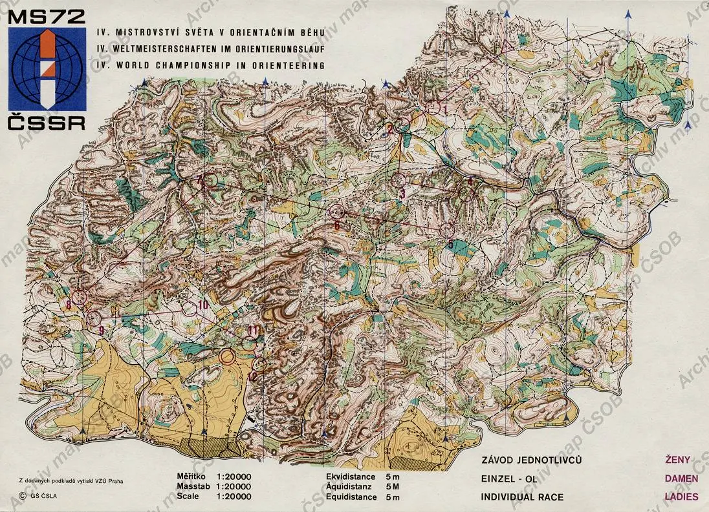
Чемпионат 1968 года в шведском Линчёпинге вошёл в историю телевидения: шведское SVT показало индивидуальную гонку в прямом эфире — это была первая телетрансляция ориентирования не только в Швеции, но и в мире. На странице старта есть сканы карт с путями призёров.
В 1970 году в ГДР впервые стартовал спортсмен не из Европы — канадец Роберт Кейл (до финиша он, правда, не добрался). А в 1972 году в Чехословакии монополию северян прервала венгерка Шарлотта Монспарт — первая победительница чемпионата мира или Европы не из Северных стран.
Затем начались эпохи великих скандинавов. Шведка Анниккен Крингстад в 1981–1985 годах выиграла шесть золотых медалей подряд — все разыгрывавшиеся. Норвежец Эйвинд Тон с 1979 по 1989 год собрал семь золотых наград. В 1978 и 1979 годах чемпионаты прошли два года подряд — единственное исключение из двухлетнего цикла той поры. В 1985 году WOC впервые уехал из Европы — в австралийский Бендиго.
Советские ориентировщики добрались до пьедестала в самом конце эпохи: в 1989 году в шведском Шёвде латышка Алида Абола выиграла бронзу в индивидуальной гонке — первую медаль СССР на чемпионатах мира.
1991–2002: новые дистанции
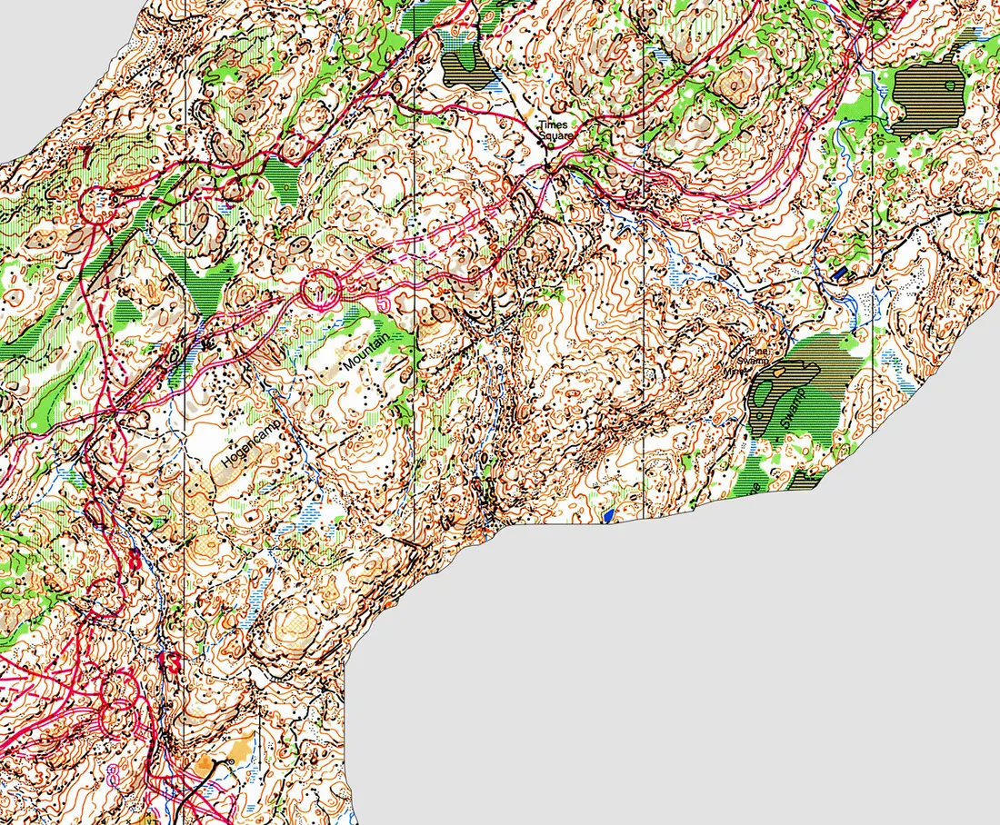
Чемпионат 1991 года в Марианске-Лазне добавил в программу короткую дистанцию на 20–25 минут; первым чемпионом в ней стал хозяин трассы чехословак Петр Козак. Там же швейцарские мужчины выиграли эстафету — это было первое золото Швейцарии на WOC, а сегодня она третья страна по числу титулов после Швеции и Норвегии. Эстонец Сикстен Сильд взял бронзу в классике — последнюю медаль сборной СССР.
Девяностые принесли разнообразие: в 1993 году чемпионат прошёл в США, в 1995-м короткую дистанцию выиграл украинец Юрий Омельченко, в 1997-м эстафету впервые выиграли датчане. В 2001 году в Тампере появился спринт — 12–15 минут бега по городу и парку. Он быстро стал отдельным видом ориентирования со своими картами, обувью и тактикой. Там же первое золото выиграла швейцарка Симоне Лудер.
2003–2017: эпоха Нигли и Жоржу
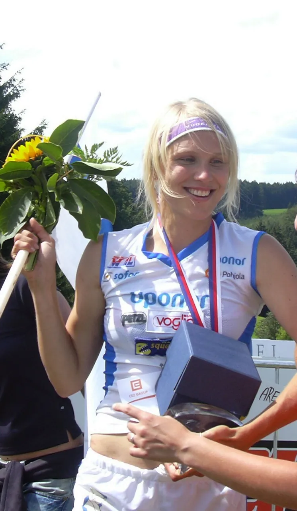
С 2003 года чемпионат стал ежегодным, короткую дистанцию заменил миддл (30–35 минут), а эстафета сократилась с четырёх этапов до трёх. Число комплектов медалей выросло с трёх до восьми — и почти все их забирали двое. Швейцарка Симоне Нигли-Лудер на чемпионате 2005 года в Японии выиграла все четыре старта, а всего с 2001 по 2013 год собрала 23 золотые медали. Француз Тьерри Жоржу превратил миддл в свою дисциплину: восемь титулов на этой дистанции и ещё шесть в других видах — вплоть до 2026 года ни одного золота WOC без его участия Франция не выигрывала.
Главной соперницей Нигли была финка Минна Кауппи — девять золотых медалей в 2004–2013 годах, в том числе три победы на миддле.
В 2006 году в Орхусе австралийка Ханни Олстон выиграла спринт и стала первой чемпионкой мира не из Европы. В 2009 году в Мишкольце случилась самая человечная история чемпионатов: на третьем этапе эстафеты тяжело травмировался лидировавший швед Мартин Юханссон, и шедшие в группе лидеров Тьерри Жоржу, Андерс Нурдберг и Михал Смола отказались от борьбы за победу, чтобы ему помочь. Организаторы долго решали, не аннулировать ли гонку, но результат оставили в силе.
В 2014 году в Италии дебютировала смешанная спринт-эстафета (женщина — мужчина — мужчина — женщина); сборная России в ней стала бронзовым призёром. Свой последний чемпионат в 2017 году в Тарту Жоржу закончил так, как и начинал, — победой на миддле.

Россия на чемпионатах мира

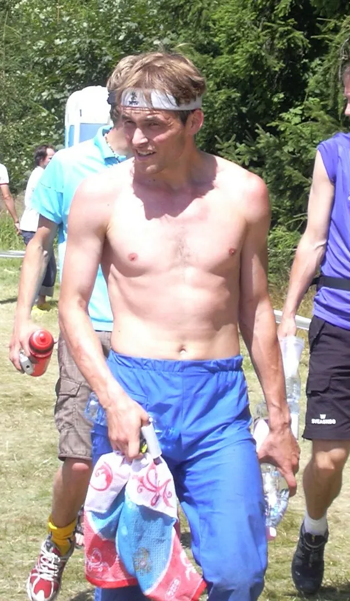
Золотое десятилетие сборной России пришлось на 2005–2016 годы. В 2005 году в Японии Андрей Храмов выиграл длинную дистанцию — первое для России личное золото чемпионатов мира. Через год мужская эстафета Роман Ефимов — Андрей Храмов — Валентин Новиков победила в Орхусе, а затем повторила успех в Киеве. Храмов дважды подряд выигрывал спринт — в 2008-м в Оломоуце и в 2009-м в Мишкольце, а эстафетная команда с Дмитрием Цветковым взяла золото в 2010 году в Тронхейме.
В 2013 году в Вуокатти миддл выиграл Леонид Новиков, а через день эстафета Леонид Новиков — Валентин Новиков — Дмитрий Цветков снова стала чемпионской. В 2014 году чемпионкой мира на длинной дистанции стала Светлана Миронова, в 2016-м в Швеции женская эстафета Анастасия Рудная — Светлана Миронова — Наталья Гемперле, а в 2018 году в Латвии Наталья Гемперле выиграла миддл. С 2022 года IOF отстранила сборные России и Белоруссии от международных стартов; Гемперле продолжила карьеру в сборной Швейцарии.
Всего у Андрея Храмова на чемпионатах мира 6 золотых медалей из 13, у Валентина Новикова — 4 из 11.
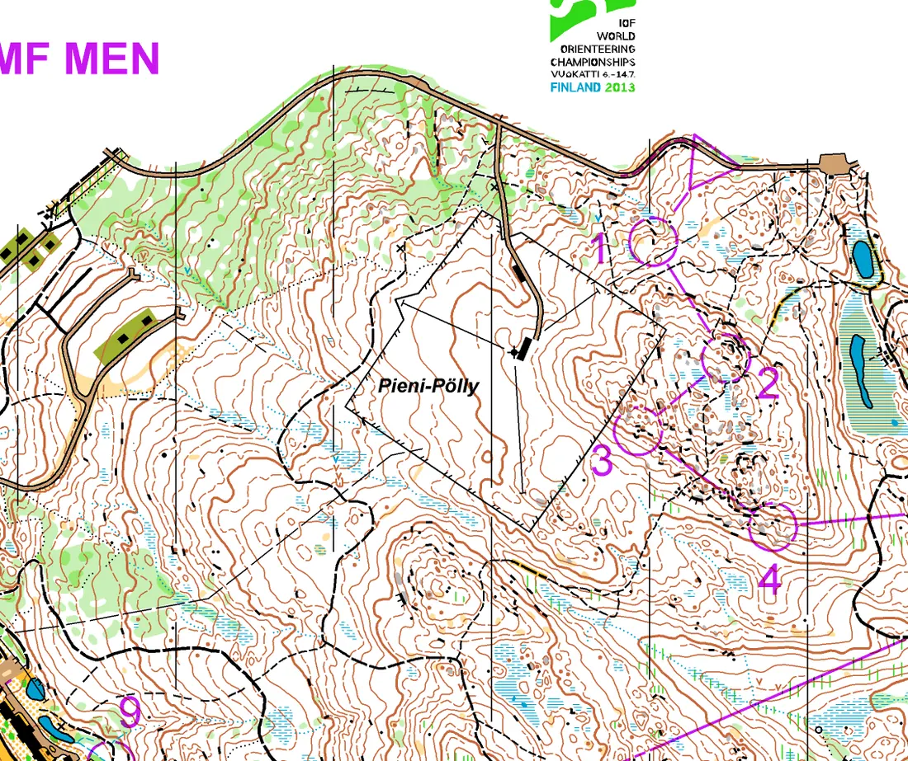
С 2018 года: Туве Александерссон и новые форматы
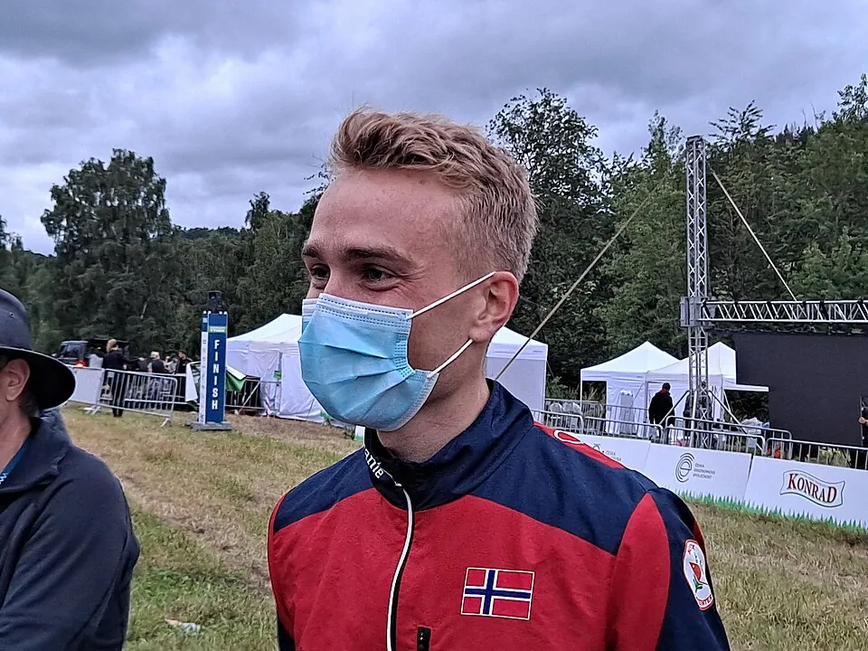
С 2018 года женское ориентирование принадлежит шведке Туве Александерссон. Она выиграла 11 золотых медалей подряд, а на чемпионате 2021 года в Чехии забрала все пять комплектов — рекорд для одного чемпионата. В 2025 году Туве догнала Нигли по числу титулов: у каждой по 23. У мужчин эстафету чемпионов приняли норвежцы Улав Лунданес (шесть побед на длинной дистанции) и Каспер Харлем Фоссер, а швейцарец Даниэль Хубманн стал самым титулованным по общему числу медалей — 29.
Формат тоже менялся. Чемпионат 2019 года в Норвегии впервые прошёл без спринта, а спринтерский WOC 2020 в Дании отменили из-за пандемии, поэтому в 2021 году в лесную программу вернули спринт и спринт-эстафету. В 2022 году в Дании состоялся первый чисто спринтерский чемпионат и дебютировал нокаут-спринт: квалификация, четвертьфиналы, полуфиналы и финал за один день.
В 2023 году в Швейцарии 40-летний Даниэль Хубманн выиграл эстафету и стал самым возрастным чемпионом мира. На спринтерском чемпионате 2026 года в Генуе Фоссер выиграл спринт, а нокаут-спринт — француз Гийем Верове и чешка Тереза Рутурье.
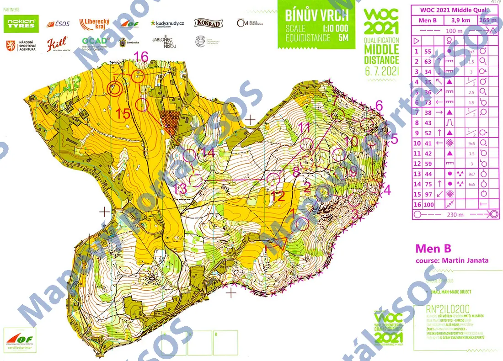
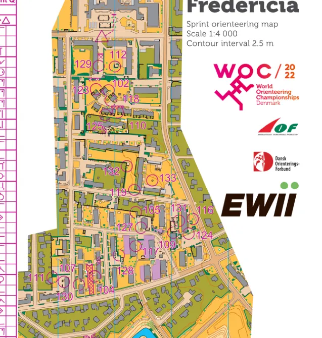
Герои чемпионатов мира
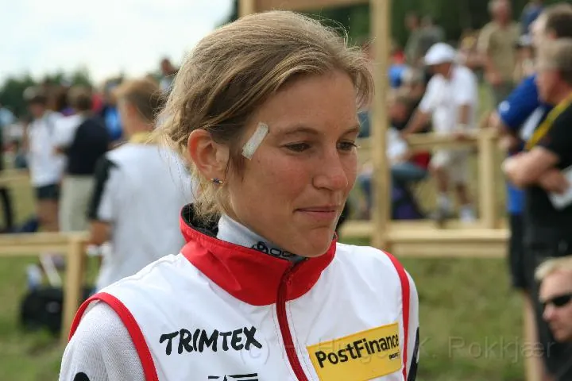

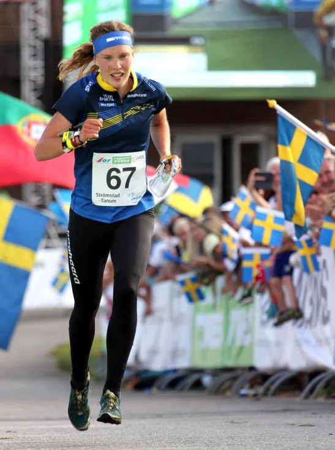
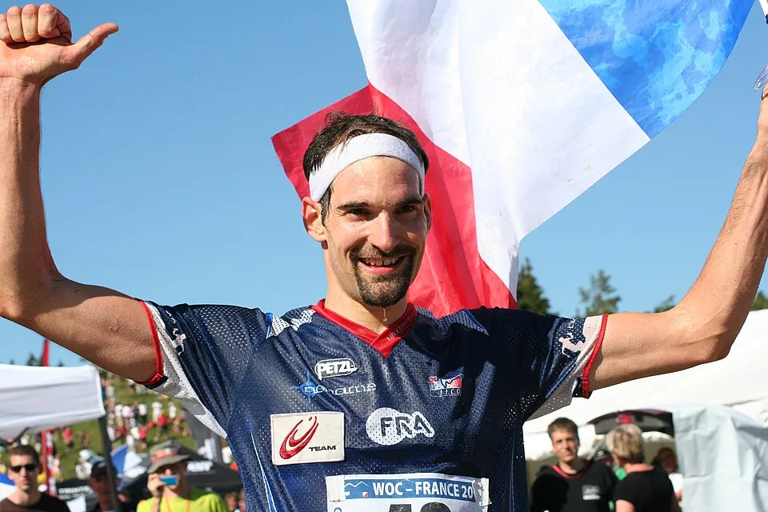
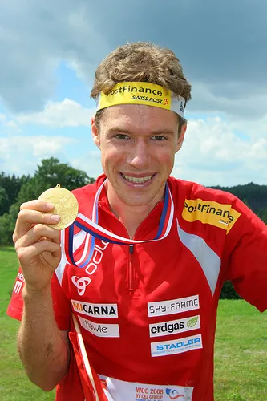
Самые титулованные: у женщин — Туве Александерссон (Швеция, 23 золота, 36 медалей) и Симоне Нигли-Лудер (Швейцария, 23 золота); у мужчин — Тьерри Жоржу (Франция, 14 золотых), Улав Лунданес (Норвегия, 10) и Даниэль Хубманн (Швейцария, 9 золотых и рекордные 29 медалей). Из ветеранов первых десятилетий — Анниккен Крингстад (6 золотых подряд) и Эйвинд Тон (7), а между эпохами — финка Минна Кауппи (9 золотых) и датчанка Майя Альм, четырёхкратная чемпионка мира в спринте (2015–2018).
Смотреть
Записи гонок с канала IOF и национального телевидения — ссылки взяты из календаря O-Maps:
Источники
Даты, места и составы — Календарь O-Maps; статьи Википедии World Orienteering Championships, медалисты-мужчины, медалистки, Чемпионат мира по спортивному ориентированию; новости IOF на orienteering.sport. Фрагменты карт — Mapový portál ČSOS, orientering.dk, сайт WOC 2013, IOF Eventor, GPSSeuranta; фотографии — Wikimedia Commons (авторы и лицензии указаны в подписях).Все старты серии с протоколами, картами, GPS-трансляциями и видео: в календаре и на странице чемпионата.